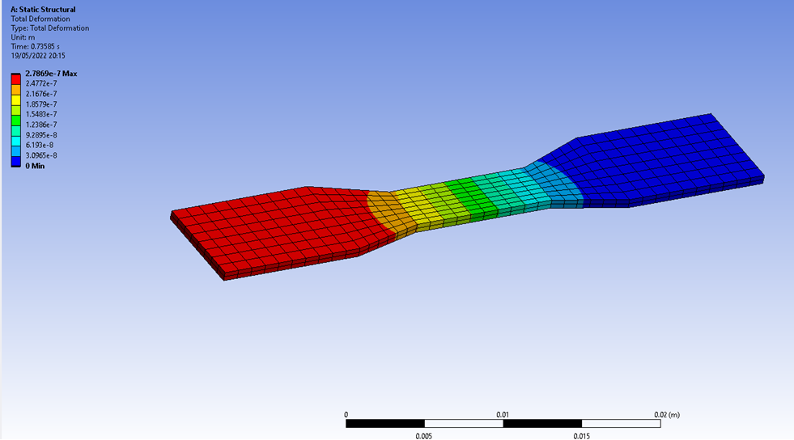
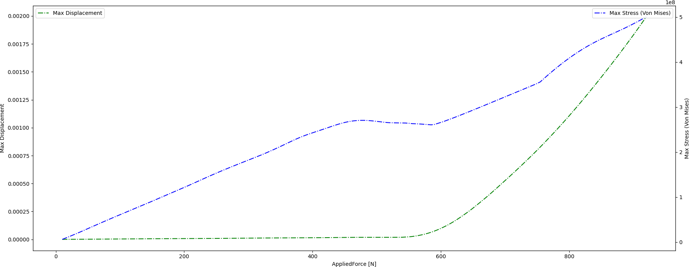
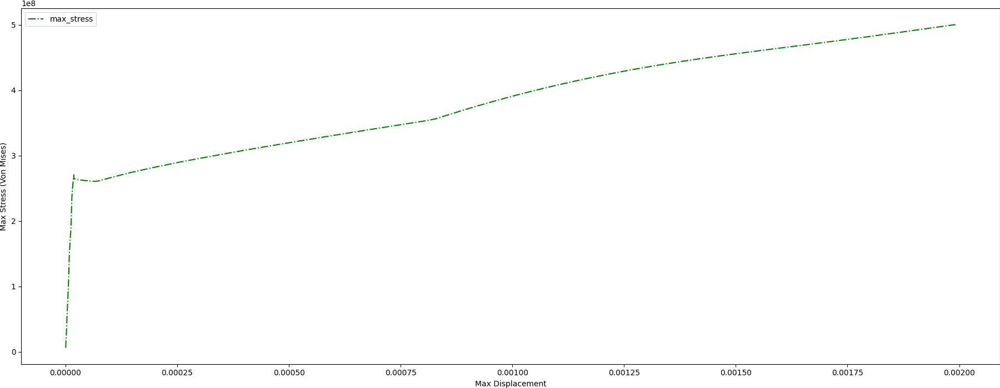

Note
Go to the end to download the full example code.
Static structural analysis and optimization using 3D field ROM#
This example shows how PyTwin can be used to perform different types of static structural analysis using 3D field ROM. A static structural model of a dog bone is created with Ansys Mechanical. A fixed support is applied on the right hand side, while a remote force is supplied on the left hand side. A non-linear structural analysis with plastic material behavior (using steel) is performed to compute the resulting stress field and associated displacement. A static ROM has been generated out of the original 3D model, so that the resulting Twin model can be evaluated using PyTwin, giving the possibilities to evaluate multiple configurations and operating conditions quickly, while keeping predictions accuracy similar to original 3D FEA model. The PyTwin worklow illustrates different APIs usage to evaluate the models at different conditions, visualize 3D detailed field results, as well as performing optimization and inverse problems.
{kind=link}
# sphinx_gallery_thumbnail_path = '_static/TBROM_FEA_static_structural_optimization.png'
Note
This example uses similar functionalities and requirements as 3D field ROM example with FEA mesh based visualization
Perform required imports#
Perform required imports, which include downloading and importing the input files.
import ansys.dpf.core as dpf
import matplotlib.pyplot as plt
import numpy as np
import pandas as pd
from pytwin import TwinModel, download_file, stress_strain_component
import pyvista as pv
from scipy.optimize import minimize
twin_file = download_file("TwinDogBone.twin", "twin_files", force_download=True)
fea_file = download_file("TwinDogBone.rst", "other_files", force_download=True)
Definition of the force values for which the model will be evaluated#
Define the force range and step size and create a simple design of experiments with uniformly space values.
applied_force_min = 10.0
applied_force_max = 920.0
step = 5.0
design_points = np.linspace(
start=applied_force_min, stop=applied_force_max, num=int((applied_force_max - applied_force_min) / step + 1)
)
Load the twin runtime and generate displacement and stress results for different forces applied.#
Load the twin runtime, initialize and extract ROM related information.
print("Initializing the Twin")
twin_model = TwinModel(twin_file)
input_name = list(twin_model.inputs.keys())[0]
results = []
for dp in design_points:
dp_input = {input_name: dp}
twin_model.initialize_evaluation(inputs=dp_input)
outputs = [dp]
for item in twin_model.outputs:
outputs.append(twin_model.outputs[item])
results.append(outputs)
if dp % 10 * step == 0.0:
print("Simulating the model with input {}".format(dp))
sim_results = pd.DataFrame(results, columns=[input_name] + list(twin_model.outputs), dtype=float)
Initializing the Twin
Simulating the model with input 10.0
Simulating the model with input 20.0
Simulating the model with input 30.0
Simulating the model with input 40.0
Simulating the model with input 50.0
Simulating the model with input 60.0
Simulating the model with input 70.0
Simulating the model with input 80.0
Simulating the model with input 90.0
Simulating the model with input 100.0
Simulating the model with input 110.0
Simulating the model with input 120.0
Simulating the model with input 130.0
Simulating the model with input 140.0
Simulating the model with input 150.0
Simulating the model with input 160.0
Simulating the model with input 170.0
Simulating the model with input 180.0
Simulating the model with input 190.0
Simulating the model with input 200.0
Simulating the model with input 210.0
Simulating the model with input 220.0
Simulating the model with input 230.0
Simulating the model with input 240.0
Simulating the model with input 250.0
Simulating the model with input 260.0
Simulating the model with input 270.0
Simulating the model with input 280.0
Simulating the model with input 290.0
Simulating the model with input 300.0
Simulating the model with input 310.0
Simulating the model with input 320.0
Simulating the model with input 330.0
Simulating the model with input 340.0
Simulating the model with input 350.0
Simulating the model with input 360.0
Simulating the model with input 370.0
Simulating the model with input 380.0
Simulating the model with input 390.0
Simulating the model with input 400.0
Simulating the model with input 410.0
Simulating the model with input 420.0
Simulating the model with input 430.0
Simulating the model with input 440.0
Simulating the model with input 450.0
Simulating the model with input 460.0
Simulating the model with input 470.0
Simulating the model with input 480.0
Simulating the model with input 490.0
Simulating the model with input 500.0
Simulating the model with input 510.0
Simulating the model with input 520.0
Simulating the model with input 530.0
Simulating the model with input 540.0
Simulating the model with input 550.0
Simulating the model with input 560.0
Simulating the model with input 570.0
Simulating the model with input 580.0
Simulating the model with input 590.0
Simulating the model with input 600.0
Simulating the model with input 610.0
Simulating the model with input 620.0
Simulating the model with input 630.0
Simulating the model with input 640.0
Simulating the model with input 650.0
Simulating the model with input 660.0
Simulating the model with input 670.0
Simulating the model with input 680.0
Simulating the model with input 690.0
Simulating the model with input 700.0
Simulating the model with input 710.0
Simulating the model with input 720.0
Simulating the model with input 730.0
Simulating the model with input 740.0
Simulating the model with input 750.0
Simulating the model with input 760.0
Simulating the model with input 770.0
Simulating the model with input 780.0
Simulating the model with input 790.0
Simulating the model with input 800.0
Simulating the model with input 810.0
Simulating the model with input 820.0
Simulating the model with input 830.0
Simulating the model with input 840.0
Simulating the model with input 850.0
Simulating the model with input 860.0
Simulating the model with input 870.0
Simulating the model with input 880.0
Simulating the model with input 890.0
Simulating the model with input 900.0
Simulating the model with input 910.0
Simulating the model with input 920.0
Results analysis (2D curves, as well as 3D visualization of field results)#
Plot the maximum displacement and stress computed with respect to supplied force
x_ind = 0
y0_ind = 1
y1_ind = 3
# Plot simulation results (outputs versus input)
fig, ax = plt.subplots(ncols=1, nrows=1, figsize=(18, 7))
fig.subplots_adjust(hspace=0.5)
fig.set_tight_layout({"pad": 0.0})
axes0 = ax
axes1 = ax.twinx()
sim_results.plot(x=x_ind, y=y0_ind, ax=axes0, color="g", ls="-.", label="{}".format("Max Displacement"))
axes0.legend(loc="upper left")
sim_results.plot(x=x_ind, y=y1_ind, ax=axes1, color="b", ls="-.", label="{}".format("Max Stress (Von Mises)"))
axes1.legend(loc="upper right")
axes0.set_xlabel(sim_results.columns[x_ind] + " [N]")
axes0.set_ylabel("Max Displacement")
axes1.set_ylabel("Max Stress (Von Mises)")
# Show plot
plt.show()
# Plot the maximum stress with respect to maximum displacement
y0_ind = 1
y1_ind = 3
# Plot simulation results (outputs versus input)
fig, ax = plt.subplots(ncols=1, nrows=1, figsize=(18, 7))
fig.subplots_adjust(hspace=0.5)
fig.set_tight_layout({"pad": 0.0})
axes0 = ax
sim_results.plot(x=y0_ind, y=y1_ind, ax=axes0, color="g", ls="-.")
axes0.set_xlabel("Max Displacement")
axes0.set_ylabel("Max Stress (Von Mises)")
# Show plot
plt.show()
- 
- 
Extract the FEA mesh information for projection#
Load the Mechanical rst file through PyDPF and extract the mesh
print("Reading the FEA mesh")
ds = dpf.DataSources()
ds.set_result_file_path(fea_file)
streams = dpf.operators.metadata.streams_provider(data_sources=ds)
# extracting the grid associated to the fea model
whole_mesh = dpf.operators.mesh.mesh_provider(streams_container=streams).eval()
target_mesh = whole_mesh.grid
Reading the FEA mesh
Project the deformation field ROM onto the targeted mesh, and visualize#
Projection is performed using nodal values since ROM is build from nodal deformation values. The default plotting method calculates the magnitude (norm) of the components for display.
def_romname = twin_model.tbrom_names[0] # 0 = Deformation ROM, 1 = Stress ROM
# field_data = twin_model.get_tbrom_output_field(romname) # point cloud results
def_field_data = twin_model.project_tbrom_on_mesh(
def_romname, target_mesh, True, nodal_values=True
) # mesh based results
def_plotter = pv.Plotter()
def_plotter.set_background("white")
def_plotter.add_axes()
def_plotter.add_mesh(def_field_data, scalar_bar_args={"color": "black"})
def_plotter.camera_position = [
(-0.04, 0.04, -0.04),
(0.0, 0, 0),
(0, 1, 0),
]
def_plotter.show()
0%| [00:00<?]
Interpolating: 0%| [00:00<?]
Interpolating: 100%|██████████[00:00<00:00]
Interpolating: 100%|██████████[00:00<00:00]
{kind=link}
Project the stress field ROM onto the targeted mesh, and visualize#
Projection is performed using nodal values since ROM is build from nodal-averaged stress values.
stress_strain_component(), is used to calculate the von Mises stress from the ROM stress tensor and this value
is plotted.
stress_romname = twin_model.tbrom_names[1] # 0 = Deformation ROM, 1 = Stress ROM
stress_field_data = twin_model.project_tbrom_on_mesh(stress_romname, target_mesh, True, nodal_values=True)
# Calculate von Mises equivalent stress and add it to the stress field data
vonMises_MPa = stress_strain_component(stress_field_data.active_scalars, "S", "EQV") / 1e6
fname = "von Mises Stress\n[MPa]"
stress_field_data.point_data[fname] = vonMises_MPa
stress_field_data.set_active_scalars(fname, preference="point")
stress_plotter = pv.Plotter()
stress_plotter.set_background("white")
stress_plotter.add_axes()
stress_plotter.add_mesh(stress_field_data, scalar_bar_args={"color": "black"})
stress_plotter.camera_position = [
(-0.04, 0.04, -0.04),
(0.0, 0, 0),
(0, 1, 0),
]
stress_plotter.show()
0%| [00:00<?]
Interpolating: 0%| [00:00<?]
Interpolating: 100%|██████████[00:00<00:00]
Interpolating: 100%|██████████[00:00<00:00]
{kind=link}
Using the Twin and ROM for inverse problems#
In this section, we are going to use a simple optimizer for inverse problems. For example, we want to determine what should be the applied force to get a given maximum stress.
stress_target = 4.8e8
def example_optimize(input_force):
input_name = list(twin_model.inputs.keys())[0]
dp_input = {input_name: input_force}
twin_model.initialize_evaluation(inputs=dp_input)
max_stress_val = twin_model.outputs["max_stress"]
return np.sqrt((max_stress_val - stress_target) ** 2)
bounds = [(1, 920)]
mymin = minimize(example_optimize, 100, bounds=bounds)
print(f"Found solution : applied force = {mymin['x']}")
input_name = list(twin_model.inputs.keys())[0]
dp_input = {input_name: mymin["x"]}
twin_model.initialize_evaluation(inputs=dp_input)
print(f"Found solution : corresponding maximum stress = {twin_model.outputs['max_stress']}")
Found solution : applied force = [893.22578833]
Found solution : corresponding maximum stress = 479999999.99988663
Total running time of the script: (0 minutes 21.684 seconds)